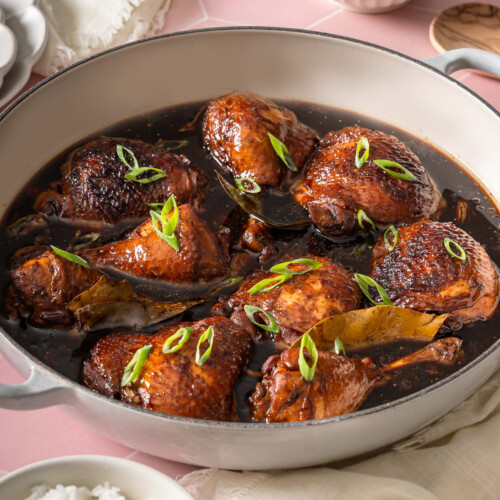
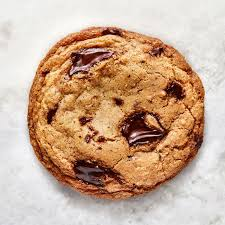
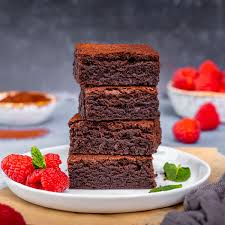
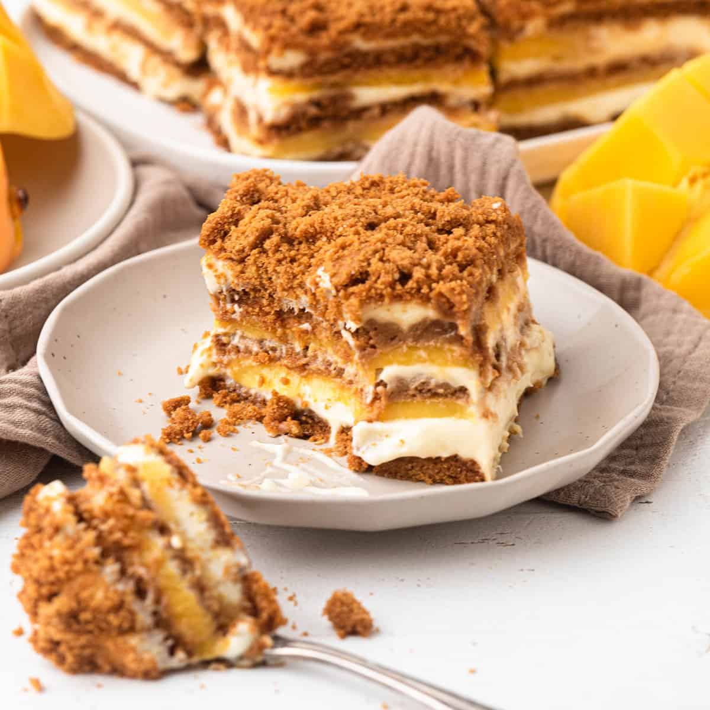

Find Recipe:
Adobong Manok

Cookies

Brownies

Chocolate Cake

Mango Graham

Cooking Links
Adobong Manok
Recipe
Filipino chicken adobo is made by braising chicken in a savory and tangy mix of soy sauce, vinegar, garlic, and peppercorns.
Mango Graham
Recipe
Mango graham float is a popular no-bake Filipino dessert made by layering MY San Graham Crackers, whipped cream, sweetened condensed milk, and ripe yellow mangoes.
Cookies
Recipe
A classic chocolate chip cookie is a sweet, baked treat featuring a soft, chewy center and crisp golden edges filled with sweet chocolate pieces.
Adobong Manok
RecipeFilipino chicken adobo is made by braising chicken in a savory and tangy mix of soy sauce, vinegar, garlic, and peppercorns.
Mango Graham
RecipeMango graham float is a popular no-bake Filipino dessert made by layering MY San Graham Crackers, whipped cream, sweetened condensed milk, and ripe yellow mangoes.
Cookies
RecipeA classic chocolate chip cookie is a sweet, baked treat featuring a soft, chewy center and crisp golden edges filled with sweet chocolate pieces.